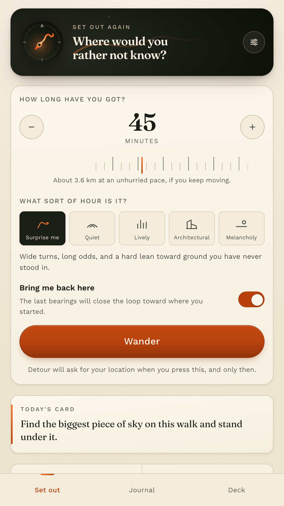
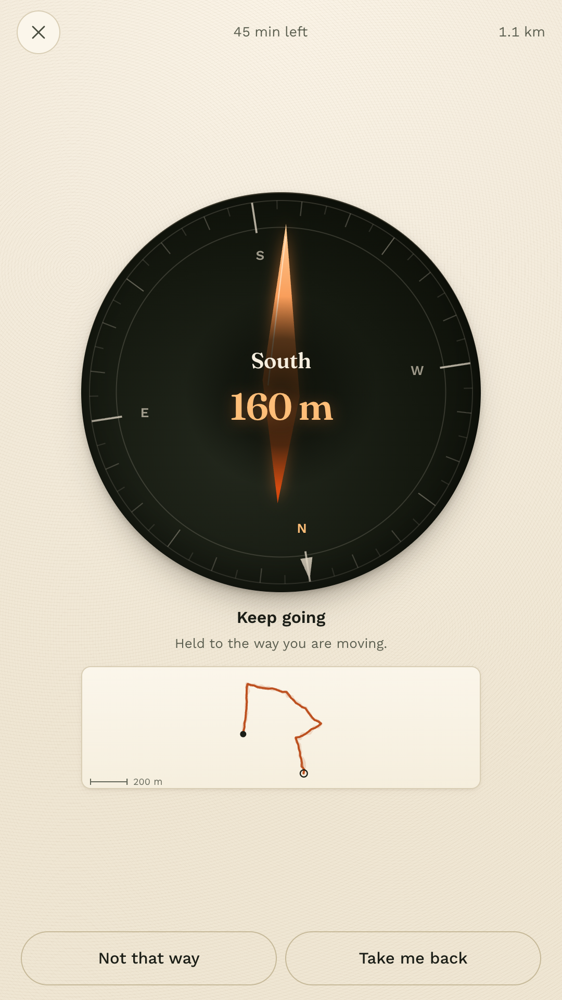
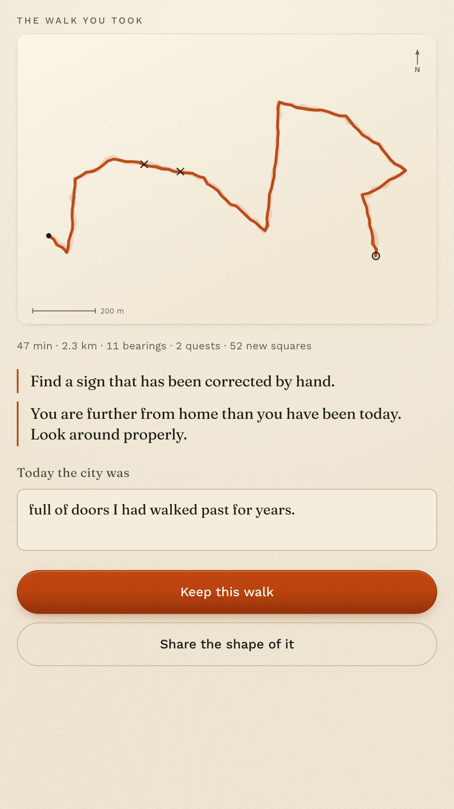
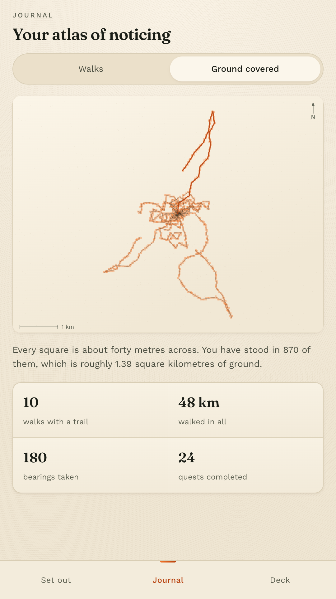

Maps has one opinion: the fastest way there. Detour has the opposite one. It gives you a direction and a distance, and lets you find your own way through it.
Get it on Google PlayFree and complete. No account, no ads, no subscription, and no internet permission.

Eleven minutes, head down, arrived, saw nothing.
Navigation optimised the walk out of walking. Detour puts the deciding back in your hands: it knows compass bearings, not streets, so which alley you take and which side of the road you cross is a choice you make over and over, the whole way round.
How a walk goes
Set the length, pick a mood, press Wander, and wait for the receiver to find you. Everything after that happens outside, with the phone mostly in your pocket.
One
Twenty minutes to three hours, and one of five moods. Quiet takes long lazy legs. Lively turns every corner it can.
Two
North east, three hundred metres. A pulse in your pocket says a new one has landed, so you can keep your eyes on the street.
Three
Walk into a dead end, a canal, a locked gate. Detour recomposes from wherever you actually stand. There is no wrong turn to be scolded for.
Four
Your own trail draws itself as an ink sketch, with the quests you finished marked where you finished them.



Three hundred and sixty two cards, written to be done in under a minute, in public, without spending anything. Two to six arrive on an hour's walk. These are real ones.
Find something older than you.
Follow a cat for one block if a cat appears.
Stand where two smells meet.
Put your hand flat on a wall older than your grandmother.
Find a puddle worth photographing and do not photograph it.
Find a sign that has been corrected by hand.
Find the join between two centuries.
Find a queue and work out what it believes in.
Answer with a line of writing, or simply do it and tap done. The ones you love can be starred so they come back.
The honest version, because a walking app that oversells itself sends people somewhere they did not want to be.
Detour does not request the internet permission. It cannot upload where you walked, because Android will not let it open a connection at all. The permission list on the Play page is the proof.
Location is read while a walk is open on your screen and stops the moment it ends. There is no background location. Approximate location is too coarse to measure a walk with, so Detour says so and offers to hand you bearings you walk by eye instead.
Export everything as JSON, or as a plain text journal that reads like a notebook. Put a copy back later from that same file. Erase the lot in two taps.
Every mood, all three hundred and sixty two cards, the journal and the coverage map are in the free app. There is nothing to unlock.
Follow a cat for one block, if a cat appears.
Get it on Google Play